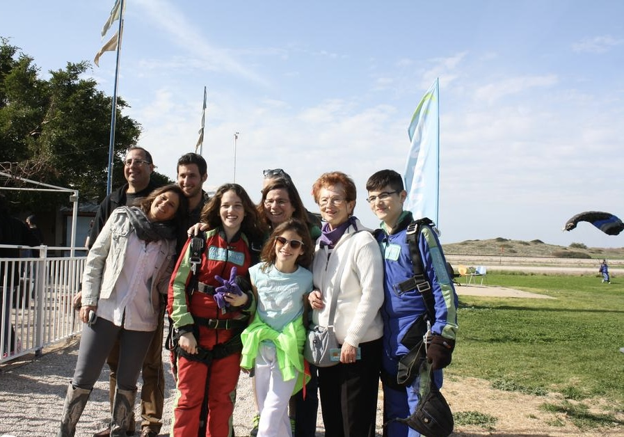
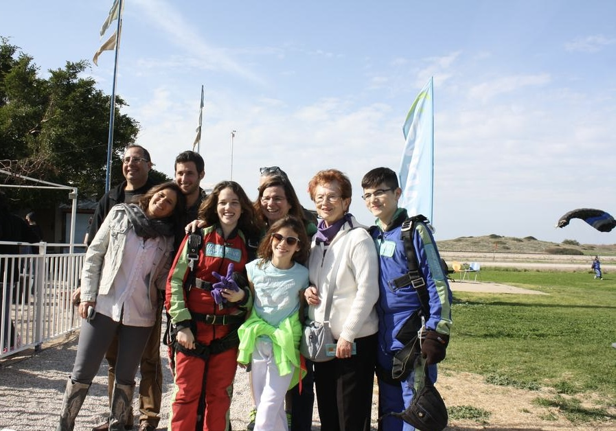

About Me
אני, רינה שר לבית שטיינמן, נולדתי ב-11/11/1935 בתל אביב.
סבי, שהיה בהכשרתו קבלן, בנה בניין ברחוב חשמונאים בתל אביב. הבנייה נמשכה זמן רב. מרבית המשפחה התגוררה בו, גם הורי, אחותי ואני גרנו שם. אנחנו גרנו בקומה הראשונה עם עוד שלוש משפחות, כשלכולנו היו שירותים משותפים ובמטבח בצד אחד בישלה אימי ובצד השני הדיירת הנוספת.
בזמן המאורעות עברנו כל המשפחה לגני עם, שאז היה כפר. המעבר היה במטרה להרחיק אותנו מההפגזות שהיו בתל אביב בעקבות הפרעות. חיינו בבית קטן עם עוד משפחות. בחצר היו תרנגולות, כך שלפחות נהנינו מביצים רבות. למרות הצפיפות, נהנינו ושמחנו.
החיים והתנאים לא היו כמו היום. במקום מקרר היה לנו ארון מיוחד שאליו היינו מביאים את הבלוקים של הקרח מבית החרושת שהיה צמוד לביתנו, עד שרכשנו מקרר לדירה. בהמשך עברנו לדירה גדולה יותר, בה גרנו רק אנחנו, המשפחה המצומצמת.
הייתי הבת הבכורה במשפחה ולאחר שלוש שנים, נולדה אחותי רות המתגוררת כיום בארצות הברית. גדלתי וחונכתי בבית דתי – מסורתי ולכן למדתי גם בבית ספר דתי לבנות.
בשעות הפנאי בילינו במגרש המשחקים, שיחקנו מחבואים, תופסת, משחקי חבל, כדור וקלאס. בנעורי השתייכתי לתנועת הנוער "בני עקיבא" – תנועה דתית מסורתית. מטרת התנועה הייתה להפגיש את הנוער וללמדו מחנאות, יחסי חברה, שירה, ריקודים ובעיקר ציונות. הפגישות נערכו פעמיים בשבוע – ביום חול ובמוצאי שבת. התנועה חולקה לשכבות בהתאם לגילאים ולכל שכבה ניתן שם ובראשה עמד מדריך/ה שליכד את כולנו.
כשהכריזו על הקמת מדינת ישראל הייתי בת 13. זכורה לי ההתרגשות והשמחה ששררה בעיר תל אביב עם ההכרזה. יצאנו כולנו לרחובות, שרנו ורקדנו. הייתה ציפייה גדולה ביום זה. אנשים התגודדו סביב מקלטי הרדיו בניסיון לשמוע אם אכן תוקם המדינה. אני זוכרת שכל המשפחה המורחבת התכנסה אצלנו בבית ואנחנו כתבנו על דף את ההחלטה של כל מדינה. כשהיה רוב להקמה יצאנו כולנו לשדרות רוטשילד ושם רקדנו ושרנו.
בשנת 1953 סיימתי את לימודי התיכוניים והתגייסתי לצבא. שירתתי בבסיס אימונים ועם סיום האימונים שובצתי לבסיס השלישות הראשית ברמת גן כאחראית על העברת חיילים מתפקידי מטה לתפקידי שדה.
בשנת 1955 השתחררתי מהצבא והתחלתי לעבוד בבנק הפועלים כמזכירה. במשך השנים התקדמתי בדרגות ובתפקידים והגעתי עד לניהול מחלקה בבנק. בתקופה בה עבדתי בבנק הפועלים הכרתי את בעלי, אברהם שר, שעבד גם הוא בבנק הפועלים בתפקיד ניהולי.
נישאנו בשנת 1958 בתל אביב, והתחלנו את חיינו המשותפים בדירה בת שלושה חדרים ליד גימנסיה הרצליה החדשה. בדירה זו נולדה בתי הבכורה, ליאורה, ולאחר מכן, כשעברנו לדירה חדשה וגדולה יותר, נולדה בתנו השנייה, מיכל.
אהבנו מאוד לטייל עם ילדינו בכל פינה ברחבי הארץ ובעולם. כשהפכתי לסבתא לשישה נכדים, הייתי מקצה יום קבוע לכל אחת מהבנות, ובאותו היום מגיעה אליהם ומבלה עם הנכדים.
היום, כשהנכדים גדלו, אנו משתדלים להיפגש לפחות פעם בשבוע, ביום שישי לארוחה ולבלות כולם יחד.
 
